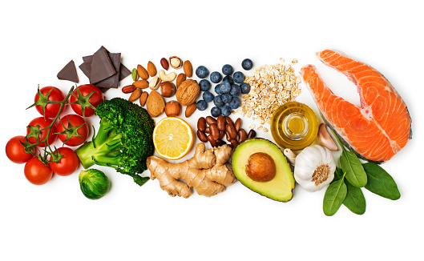

COMER SALUDABLE

fecha: 20/06/18
Una alimentación saludable significa comer en forma equilibrada todos los alimentos disponibles, con una correcta selección y un adecuado consumo de los mismos. Es decir, una alimentación variada asegura la incorporación y aprovechamiento de todos los nutrientes que necesitamos para crecer y vivir saludablemente.

COMIDA SALUDABLE
fecha: 16/06/18
Favorecen el buen funcionamiento del organismo y, además, tienen propiedades 'antienvejecimiento’
De forma genérica, las frutas y verduras contienen vitamina C (ayuda a mantener una función normal del sistema inmune y está especialmente presente en cítricos, como las naranjas, también en la piña y los tomates). También son buena fuente de Vitamina E y betacarotenos (provitamina A), con propiedades antioxidantes, que actúan contra los radicales libres, de modo que contribuyen al mantenimiento de la salud celular (y por tanto, a prevenir el envejecimiento).
También nos ayuda a conservar una correcta salud ocular, al buen funcionamiento del sistema nervioso y a mantener unos niveles normales de presión arterial gracias a su contenido en minerales, principalmente potasio y magnesio, entre otros.